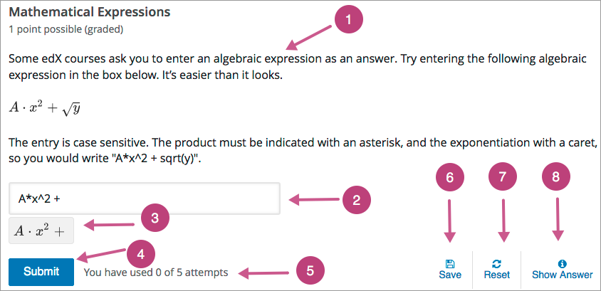
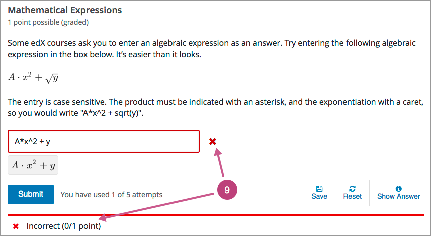
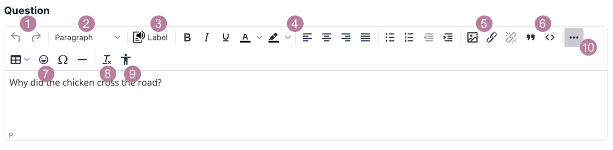
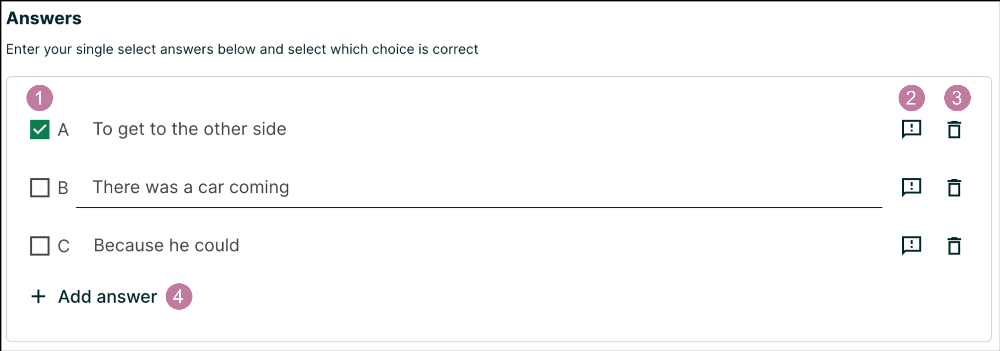
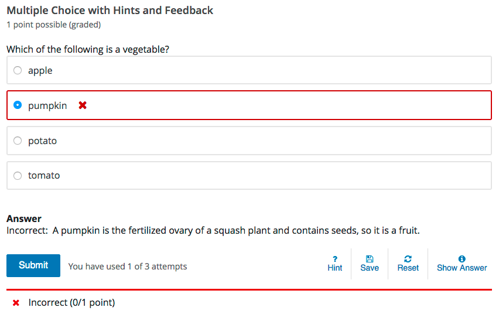
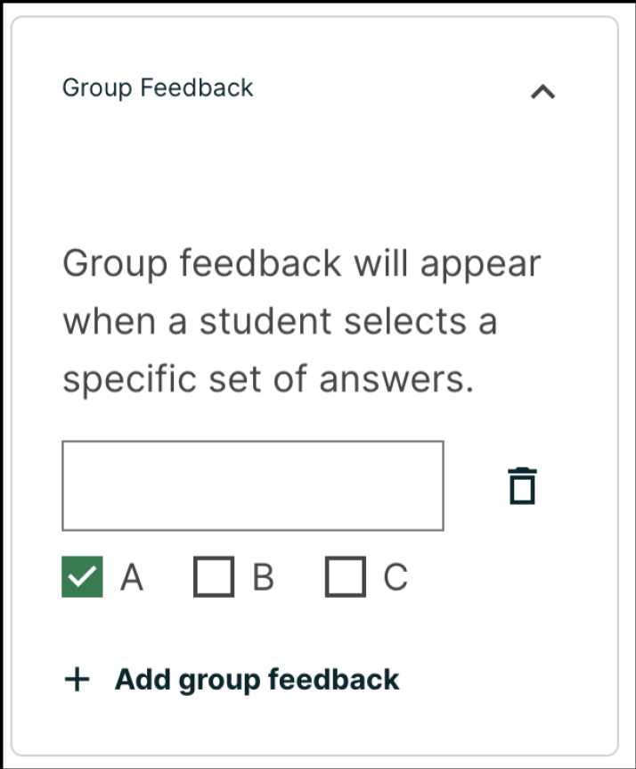
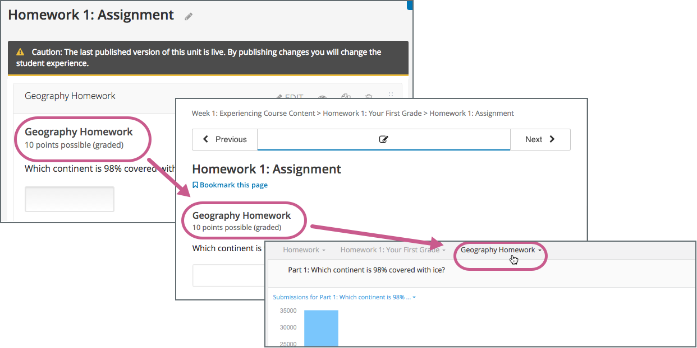
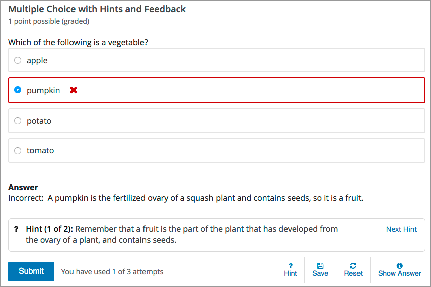

8.4. Working with Problem Components#
This section introduces the core set of problem types that course teams can add to any course by using the problem component. It also describes editing options and settings for problem components.
For information about specific problem types, and the other exercises and tools that you can add to your course, see Problems, Exercises, and Tools.
8.4.1. Adding a Problem#
To add interactive problems to a course in Studio, in the course outline, at the unit level, you select Problem. You then choose the type of problem that you want to build on the Problem Type Selection page.
The simple problem types include relatively straightforward CAPA problems such as single select and text or numeric input. The advanced problem types can be more complex to set up, such as math expression input, open response assessment, or custom JavaScript problems.
8.4.1.1. Adding Graded or Ungraded Problems#
When you establish the grading policy for your course, you define the assignment types that count toward learners’ grades: for example, homework, labs, midterm, final, and participation. You specify one of these assignment types for each of the subsections in your course.
As you develop your course, you can add problem components to a unit in any subsection. The problem components that you add automatically inherit the assignment type that is defined at the subsection level. For example, all of the problem components that you add to a unit in the midterm subsection are graded.
For more information, see Set the Assignment Type and Due Date for a Subsection.
8.4.2. The Learner View of a Problem#
All problems on the edX platform have these component parts, some of which can be configured. For configurable options, you can specify whether and when an option is available in problems.
{kind=link}
Problem text. The problem text can contain any standard HTML formatting.
Within the problem text for each problem component, you must identify a question or prompt, which is, specifically, the question that learners need to answer. This question or prompt also serves as the required accessible label, and is used by screen readers, reports, and Insights. For more information about identifying the question text in your problem, see The Simple Editor.
Response field. Learners enter answers in response fields. The appearance of the response field depends on the type of the problem.
Rendered answer. For some problem types, the LMS uses MathJax to render plain text as “beautiful math.”
Submit. When a learner selects Submit to submit a response for a problem, the LMS saves the grade and current state of the problem. The LMS immediately provides feedback about whether the response is correct or incorrect, as well as the problem score. The Submit option remains available if the learner has unused attempts remaining, so that they can try to answer the problem again.
Note
If you want to temporarily or permanently hide learners’ results for problems inside of a subsection, see Set Problem Results Visibility.
Attempts. You can set a specific number of attempts or allow unlimited attempts for a problem. By default, the course-wide Maximum Attempts advanced setting is null, meaning that the maximum number of attempts for problems is unlimited.
In courses where a specific number has been specified for Maximum Attempts in Advanced Settings, if you do not specify a value for Maximum Attempts for an individual problem, the number of attempts for that problem defaults to the number of attempts defined in Advanced Settings.
Save. The learner can select Save to save their current response without submitting it for grading. This allows the learner to stop working on a problem and come back to it later.
Reset. You can specify whether the Reset option is available for a problem. This setting at the problem level overrides the default setting for the course in Advanced Settings.
If the Reset option is available, learners can select Reset to clear any input that has not yet been submitted, and try again to answer the question.
If the learner has already submitted an answer, selecting Reset clears the submission and, if the problem includes a Python script to randomize variables and the randomization setting is On Reset, changes the values the learner sees in the problem.
If the problem has already been answered correctly, Reset is not available.
If the number of Maximum Attempts that was set for this problem has been reached, Reset is not available.
Show Answer. You can specify whether this option is available for a problem. If a learner selects Show Answer, the learner sees both the correct answer and the explanation, if any.
If you specify a number in Show Answer: After Some Number of Attempts, the learner must submit at least that number of attempted answers before the Show Answer option is available for the problem.
Feedback. After a learner selects Submit, an icon appears beside each response field or selection within a problem. A green check mark indicates that the response was correct, a green asterisk (*) indicates that the response was partially correct, and a red X indicates that the response was incorrect. Underneath the problem, feedback text indicates whether the problem was answered correctly, incorrectly, or partially correctly, and shows the problem score.
Note
If you want to temporarily or permanently hide learners’ results for problems inside of a subsection, see Set Problem Results Visibility.
{kind=link}
In addition to the items above, which are shown in the example, problems also have the following elements.
Correct answer. Most problems require that you specify a single correct answer.
Explanation. You can include an explanation that appears when a learner selects Show Answer.
Grading. You can specify whether a group of problems is graded.
Due date. The date that the problem is due. Learners cannot submit answers for problems whose due dates have passed, although they can select Show Answer to show the correct answer and the explanation, if any.
Note
Problems can be open or closed. Closed problems, such as problems whose due dates are in the past, do not accept further responses and cannot be reset. Learners can still see questions, solutions, and revealed explanations, but they cannot submit responses or reset problems.
There are also some attributes of problems that are not immediately visible. You can set these attributes in Studio.
Accessible Label. Within the problem text, you can identify the text that is, specifically, the question that learners need to answer. The text that is labeled as the question is used by screen readers, reports, and Insights. For more information, see The Simple Editor.
Randomization. In certain types of problems, you can include a Python script to randomize the values that are presented to learners. You use this setting to define when values are randomized. For more information, see Randomization.
8.4.3. Editing a Problem in Studio#
When you select Problem, Studio adds a blank problem to the unit and brings you to the problem editor. From here, you can select 1 of 5 simple problem types or select Advanced problem types for a list of advanced problem types.
For simple problem types, the simple editor opens. In this editor, you can quickly create problems with question and answer formats. Options for scoring, hints, feedback and more can be entered.
For advanced problem types, the advanced editor opens. In this editor you use open learning XML (OLX) elements and attributes to identify the elements of the problem. Options for scoring, feedback and more can be entered.
For open response assessment problem types, you define the problem elements and options by using a graphical user interface. For more information, see Create an Open Response Assessment Assignment.
For drag and drop problem types, you build an interactive assessment in a customized interface in which you define areas that learners can drag into target zones on a background image. For more information, see Creating a Drag and Drop Problem.
You can switch from the simple editor to the advanced editor at any time by selecting the Switch to advanced editor from the simple editor’s settings.
Note
After you save a problem in the advanced editor with complex OLX, you may not be able to open it again in the simple editor.
8.4.3.1. The Simple Editor#
When you select one of the simple problem types, you will be directed to the simple editor.
8.4.3.2. Question and Explanation Fields#
The question and explanation fields (and other text fields as well) offer a number of formatting tools to craft your problem.
{kind=link}
Undo/Redo: Undo or redo changes made to the text field.
HTML Tags: Applies HTML tags to the selected block of text.
Label: Applies a “Question” label to the selected text which is picked up by screen readers. Screen readers read all of the text that you supply for the problem, and then repeat the text that is identified by this label immediately before reading the answer choices for the problem. This label can be removed by selecting the block of text and clicking this button again.
Formatting: Applies various formatting to the selected text such as bold, italicize, underline, color, text alignment, bullet points and indentation.
Add Image and Links: Allows you to add images and links to your text field.
Blockquote and Code: Applies blockquote or code formatting to the selected text. This can be removed by selecting the text and clicking this button again.
Various Inserts: Insert tables, emoticons, special characters and page breaks using these buttons.
Clear Formatting: Clears all formatting applied to the selected text.
Accessibility Checker: allows you to check HTML in the editor for various accessibility problems.
More: Depending on page size, some of the toolbar may not show. Click this button to expand or shrink the toolbar.
The explanation field is almost identical to the question field, only missing the Label button for marking questions.
8.4.3.3. Answer Fields#
Enter your answers below in this section. While what you see below is the general layout of the answer fields, there are some minor differences between problem types.
{kind=link}
Correct Answer: The selected or checked answer(s) are the correct answers. Due to the nature of dropdowns only allowing a single selection, the dropdown problem type has radio buttons which allow you to select only one correct answer. As you cannot enter incorrect answers for numeric input problems, the numeric input problem type automatically comes with checked answers. The other problem types allow you to select any number of correct answers.
Answer Feedback: Opens up the feedback panel for an answer option. For more information, see the following Adding Feedback section.
Delete Answer: Removes the corresponding line of answer buttons and fields.
Add Answer: Adds a new line of answer buttons and fields.
8.4.3.4. Adding Feedback#
You can add feedback that displays to learners after they submit an answer.
For example, the following single select problem provides feedback in response to the selected option when the learner selects Submit. In this case, feedback is given for an incorrect answer.
{kind=link}
While editing a problem block, you can apply Answer-specific feedback for all problem types. Group feedback can only be applied to multi-select problems.
Answer-specific feedback can be added under each answer by pressing the feedback icon to the right of the answer text. Feedback entered in these fields are given when the learner selects that answer or when the learner does not select that answer.

Note
The “is not selected” feedback field shown above is only available for the multi-select problem type.
Group Feedback can be found on the collapsible settings to the right of the problem editor. Feedback entered in this field will display if and only if the learner selects all of the checked answers. Click the Add group feedback button to add additional feedback for different groups of checked answers. Group feedback can only be applied for the multi-select problem type.
{kind=link}
Note
Feedback for incorrect answers in the numerical input problem type is not supported.
8.4.3.4.1. Best Practices for Providing Feedback#
The immediacy of the feedback available to learners is a key advantage of online instruction and difficult to do in a traditional classroom environment.
You can target feedback for common incorrect answers to the misconceptions that are common for the level of the learner (for example, elementary, middle, high school, college).
In addition, you can create feedback that provides some guidance to the learner about how to arrive at the correct answer. This is especially important in text input problems, because without such guidance, learners might not be able to proceed.
You should also include feedback for the correct answer to reinforce why the answer is correct. Especially in questions where learners are able to guess, such as single select and dropdown problems, the feedback should provide a reason why the selection is correct.
8.4.3.5. Adding Mathematics#
To add mathematics, you can use LaTeX, MathML, or AsciiMath notation. Studio uses MathJax to render equations. For more information, see MathJax for Mathematics.
8.4.3.6. Power Paste#
Many course authoring teams rely on copying and pasting content from documents such as Google docs or Microsoft Word. Correct formatting in Studio and the LMS can be most easily realized through Power Paste. To learn how to use Power Paste, see Power Paste.
8.4.4. Defining Settings for Problem Components#
In addition to the text of the problem and its formatting or OLX markup, you define the following settings for problem components. To access these settings, edit the problem. With the exception of Display Name, you can find all of these settings on the right side of your problem. Click on Show advanced settings to view additional options such as Show Answer, Show reset option and Time between attempts.
If you do not edit these settings, default values are supplied for your problems.
Note
If you want to temporarily or permanently hide problem results from learners, you use the subsection-level Results Visibility setting. You cannot change the visibility of individual problems. For more information, see Set Problem Results Visibility.
8.4.4.1. Display Name#
This required setting provides an identifying name for the problem. The display name appears as a heading above the problem in the LMS, and it identifies the problem for you in Insights. Be sure to add unique, descriptive display names so that you, and your learners, can identify specific problems quickly and accurately.
You can find the display name setting at the top of your problem. To edit, click the pen symbol to the right of the field and enter the desired text.
The following illustration shows the display name of a problem in Studio, in the LMS, and in Insights.
{kind=link}
For more information about metrics for your course’s problem components, see Using edX Insights.
8.4.4.2. Type#
You can change the problem type after your initial selection. The current problem type is shown with a check mark. Selecting any other problem type will change your problem to that type while carrying over the content you have already prepared. Please check your selection for correct answers as these may not carry over when changing problem types.
Note
If you would like to convert your problem into an advanced problem, scroll down to the bottom of the settings, click Show advanced settings and then click Switch to advanced editor.
8.4.4.3. Scoring#
These settings allow you to change the amount of points your problem is worth and the number of attempts a student has for answering it.
8.4.4.3.1. Problem Points#
This setting specifies the total number of points possible for the problem. This defaults to 1 point. In the LMS, the number of points a problem is worth appears near the problem’s display name.
Note
The LMS scores all problems. However, only scores for problem components that are in graded subsections count toward a learner’s final grade.
8.4.4.3.2. Attempts#
This setting specifies the number of times that a learner is allowed to try to answer this problem correctly. You can define a different Attempts value for each problem. Setting the Attempts value to empty means that learners have an unlimited number of attempts.
A course-wide Maximum Attempts setting defines the default value for this problem-specific setting. Initially, the value for the course-wide setting is null, meaning that learners can try to answer problems an unlimited number of times. You can change the course-wide default by selecting Settings and then Advanced Settings. Note that if you change the course-wide default from null to a specific number, you can no longer change the problem-specific Attempts value to unlimited.
Only problems that have an Attempts setting of 1 or higher are included in the answer distribution computations used in edX Insights and the Student Answer Distribution report.
Note
EdX recommends setting Maximum Attempts to unlimited or a large number when possible. Problems that allow unlimited attempts encourage risk taking and experimentation, both of which lead to improved learning outcomes. However, allowing for unlimited attempts might not be feasible in some courses, such as those that use primarily single select or dropdown problems in graded subsections.
8.4.4.4. Hints#
In the settings panels on the right of the editor, you’ll find a Hints panel.

Click the Add hint button to add a new hint text field. To delete any hints you’ve added, click the trash can icon next to its respective hint field.
Note
You can configure any number of hints. The learner views one hint at a time and views the next one by selecting Hint again.
When you add hints, the Hint button is automatically displayed to learners. Learners can access the hints by selecting Hint beneath the problem. A learner can view multiple hints by selecting Hint multiple times.
For example, in the following single select problem, the learner selects Hint after having made one incorrect attempt.
{kind=link}
The hint text indicates that it is the first of two hints. After the learner selects Next Hint, both of the available hints appear. When all hints have been used, the Hint or Next Hint option is no longer available.

8.4.4.4.1. Best Practices for Providing Hints#
To ensure that your hints can assist learners with varying backgrounds and levels of understanding, you should provide multiple hints with different levels of detail.
For example, the first hint can orient the learner to the problem and help those struggling to better understand what is being asked.
The second hint can then take the learner further towards the answer.
In problems that are not graded, the third and final hint can explain the solution for learners who are still confused.
8.4.4.5. Show Answer#
This setting can be found on the collapsible settings to the right of the problem editor after clicking Show advanced settings. This will add a Show Answer option to the problem for the learner. The following options define when the answer is shown to learners.
After All Attempts |
Learners will be able to Show Answer after they have used all of their attempts. Requires max attempts to be set on the problem. |
After All Attempts or Correct |
Learners will be able to Show Answer after they have used all of their attempts or have correctly answered the question. If max attempts are not set, the learner will need to answer correctly before they can Show Answer. |
After Some Number of Attempts |
Learners will be able to Show Answer after they have attempted the problem a minimum number of times (this value is set by the course team in Studio). |
Always |
Always present the Show Answer option. Note: If you specify Always, learners can submit a response even after they select Show Answer to see the correct answer. |
Answered |
Learners will be able to Show Answer after they have correctly answered the problem. |
Attempted |
Learners will be able to Show Answer after they have made at least 1 attempt on the problem. If the problem can be, and is, reset, the answer continues to show. (When a learner answers a problem, the problem is considered to be both attempted and answered. When the problem is reset, the problem is still considered to have been attempted, but is not considered to be answered.) |
Attempted or Past Due |
Learners will be able to Show Answer after they have made at least 1 attempt on the problem or the problem’s due date is in the past. |
Closed |
Learners will be able to Show Answer after they have used all attempts on the problem or the due date for the problem is in the past. |
Correct or Past Due |
Learners will be able to Show Answer after they have correctly answered the problem or the due date for the problem is in the past. |
Finished |
Learners will be able to Show Answer after they have used all attempts on the problem or the due date for the problem is in the past or they have correctly answered the problem. |
Never |
Learners and Staff will never be able to Show Answer. |
Past Due |
Learners will be able to Show Answer after the due date for the problem is in the past. |
An explanation for the correct answer can be entered below. This explanation is displayed when the learner presses the Show answer option.
8.4.4.5.1. Number of Attempts#
This setting appears under the Show answer dropdown when the After some number of attempts, After all attempts or After all attempts or correct option is selected. This limits when learners can select the Show Answer option for a problem. Learners must submit at least the specified number of attempted answers for the problem before the Show Answer option is available to them.
8.4.4.7. Time Between Attempts#
This setting can be found on the collapsible settings to the right of the problem editor after clicking Show advanced settings. It specifies the number of seconds that a learner must wait between submissions for a problem that allows multiple attempts. If the value is 0, the learner can attempt the problem again immediately after an incorrect attempt.
Adding required wait time between attempts can help to prevent learners from simply guessing when multiple attempts are allowed.
If a learner attempts a problem again before the required time has elapsed, they see a message below the problem indicating the remaining wait time. The format of the message is, “You must wait at least {n} seconds between submissions. {n} seconds remaining.”
8.4.5. The Advanced Editor#
If the simple editor cannot fulfill your needs, you might turn your attention to the Advanced Editor. This editor will allow you to directly edit the open learning XML (OLX) of your problem. The Advanced Editor can be accessed one of two ways.
If you are creating a new problem, on the Select problem type screen, select the Advanced problem types. This will bring you to a list of advanced problems with varying levels of support. To create an advanced problem from scratch, select Blank advanced problem.
If you are looking to turn your simple problem into an advanced problem, click the Switch to advanced editor button, which can be found on the collapsible settings to the right of the problem editor after clicking Show advanced settings.
The Advanced Editor retains several settings from the simple editor such as Scoring, Show answer, Show reset option, Time between attempts and MATLAB API Key as well as introduces the Randomization setting. While the other settings are not shown on the collapsible panes to the right of the problem editor, they can be added via editing the OLX.
OLX specifications can be found under each problem type in Adding Exercises and Tools.
Note
If you have turned your problem into an advanced problem, it is possible to turn it back into a simple problem. When you edit a problem, as long as the problem editor can fully parse the OLX, the editor will open as the Simple Editor instead of the Advanced Editor.
Warning
Be careful when using certain values in your tag’s class attribute. The
following are used when running the problem: capa_inputtype,
choicegroup, collapsible, full, inputtype, longform,
message, notification-gentle-alert, notification-hint,
notification-message, notification-save, problem,
script_placeholder, shortform, shortform-custom, show,
wrapper-problem-response
8.4.6. Advanced Editor Features#
Since the Advanced Editor allows you to edit the problem directly using the OLX, there are many more ways to write a problem. Below are several features the Advanced Editor is capable of:
8.4.6.1. Randomization#
Note
This Randomization setting serves a different purpose from “problem randomization”. This Randomization setting affects how numeric values are randomized within a single problem and requires the inclusion of a Python script. Problem randomization presents different problems or problem versions to different learners. For more information, see Problem Randomization.
This setting can be found on the collapsible settings to the right of the problem editor. For problems that include a Python script to generate numbers randomly, this setting specifies how frequently the values in the problem change: each time a different learner accesses the problem, each time a single learner tries to answer the problem, both, or never.
Note
This setting should only be set to an option other than Never for problems that are configured to do random number generation.
For example, in this problem, the highlighted values change each time a learner submits an answer to the problem.

If you want to randomize numeric values in a problem, you complete both of these steps.
Make sure that you edit your problem to include a Python script that randomly generates numbers.
Select an option other than Never for the Randomization setting.
The edX Platform has a 20-seed maximum for randomization. This means that learners see up to 20 different problem variants for every problem that has Randomization set to an option other than Never. It also means that every answer for the 20 different variants is reported by the Answer Distribution report and edX Insights. Limiting the number of variants to a maximum of 20 allows for better analysis of learner submissions by allowing you to detect common incorrect answers and usage patterns for such answers.
For more information, see Student Answer Distribution in this guide, or Review Answers to Graded Problems or Review Answers to Ungraded Problems in Using edX Insights.
Important
Whenever you choose an option other than Never for a problem, the computations for the Answer Distribution report and edX Insights include up to 20 variants for the problem, even if the problem was not actually configured to include randomly generated values. This can make data collected for problems that cannot include randomly generated values, (including, but not limited to, all single select, multi-select, dropdown, and text input problems), extremely difficult to interpret.
You can choose the following options for the Randomization setting.
Option |
Description |
|---|---|
Always |
Learners see a different version of the problem each time they select Submit. |
On Reset |
Learners see a different version of the problem each time they select Reset. |
Never |
All learners see the same version of the problem. For most courses, this option is supplied by default. Select this option for every problem in your course that does not include a Python script to generate random numbers. |
Per Student |
Individual learners see the same version of the problem each time they look at it, but that version is different from the version that other learners see. |
8.4.6.2. Including Multiple Questions in One Component#
In some cases, you might want to design an assessment that combines multiple questions in a single problem component. For example, you might want learners to demonstrate mastery of a concept by providing the correct responses to several questions, and only giving them credit for a problem if all of the answers are correct.
Another example involves learners who have slow or intermittent internet connections. When every problem appears on a separately loaded web page, these learners can find the amount of time it takes to complete an assignment or exam discouraging. For these learners, grouping several questions together can promote increased engagement with course assignments.
When you add multiple questions to a single problem component, the settings that you define, including the display name and whether to show the Reset button, apply to all of the questions in that component. The answers to all of the questions are submitted when learners select Submit, and the correct answers for all of the questions appear when learners select Show Answer. By default, learners receive one point for each question they answer correctly. For more information about changing the default problem points and other settings, see Defining Settings for Problem Components.
Important
To assure that the data collected for learner interactions with your problem components is complete and accurate, include a maximum of 10 questions in a single problem component.
8.4.6.2.1. Adding Multiple Questions to a Problem Component#
To design an assignment that includes several questions, you add one problem
component and then edit it to add every question and its answer options, one
after the other, in that component. Be sure to identify the text of every
question or prompt with the appropriate OLX <label> element, and include
all of the other required elements for each question.
Each question and its answer options are enclosed by the element that identifies the type of problem, such as
<multiplechoiceresponse>for a single select question or<formularesponse>for a math expression input question.You can provide a different explanation for each question with the OLX
<solution>element.
As a best practice, edX recommends that you avoid including unformatted paragraph text between the questions. Screen readers can skip over text that is inserted among multiple questions.
The questions that you include can all be of the same problem type, such as a series of text input questions, or you can include questions that use different problem types, such as both numerical input and math expression input.
Note
You cannot use a Custom JavaScript Display and Grading Problem in a problem component that contains more than one question. Each custom JavaScript problem must be in its own component.
An example of a problem component that includes a text input question and a numerical input question follows.
<problem>
<stringresponse answer="Caesar Cardini" type="ci">
<label>Who invented the Caesar salad?</label>
<description>Be sure to check your spelling.</description>
<textline size="20"/>
<solution>
<div class="detailed-solution">
<p>Explanation</p>
<p>Caesar Cardini is credited with inventing this salad and received
a U.S. trademark for his salad dressing recipe.</p>
</div>
</solution>
</stringresponse>
<numericalresponse answer="1924">
<label>In what year?</label>
<formulaequationinput/>
<solution>
<div class="detailed-solution">
<p>Explanation</p>
<p>Cardini invented the dish at his restaurant on 4 July 1924 after
the rush of holiday business left the kitchen with fewer supplies
than usual.</p>
</div>
</solution>
</numericalresponse>
</problem>
8.4.6.3. Awarding Partial Credit for a Problem#
You can configure the following problem types so that learners can receive partial credit for a problem if they submit an answer that is partly correct.
By awarding partial credit for problems, you can motivate learners who have mastered some of the course content and provide a score that accurately demonstrates their progress.
For more information about configuring partial credit, see the topic for each problem type.
Note
Support for the partial credit feature is provisional for courses on edx.org and edX Edge. Ensure that you test such problems thoroughly before you publish them to learners. For more information, contact your edX partner manager.
8.4.6.3.1. How Learners Receive Partial Credit#
Learners receive partial credit when they submit an answer in the LMS.
In the following example, the course team configured a single select problem to award 25% of the possible points (instead of 0 points) for one of the incorrect answer options. The learner selected this incorrect option, and received 25% of the possible points.

8.4.6.3.2. Partial Credit and Reporting on Learner Performance#
When a learner receives partial credit for a problem, the LMS only adds the points that the learner earned to the grade. However, the LMS reports any problem for which a learner receives credit, in full or in part, as correct in the following ways.
Events that the system generates when learners receive partial credit for a problem indicate that the answer was correct. Specifically, the
correctnessfield has a value ofcorrect.For more information about events, see Problem Interaction Events in the EdX Research Guide.
The AnswerValue in the Student Answer Distribution report is 1, for correct.
The edX Insights insights:student performance reports count the answer as correct.
Course teams can see that a learner received partial credit for a problem in
the learner’s submission history. The submission history shows the score that
the learner received out of the total available score, and the value in the
correctness field is partially-correct. For more information, see
Learner Answer Submissions.
8.4.6.4. Adding Tooltips to a Problem#
To help learners understand terminology or other aspects of a problem, you can add inline tooltips. Tooltips show text to learners when they move their cursors over a tooltip icon.
The following example problem includes two tooltips. The tooltip that provides a definition for “ROI” is being shown.

Note
For learners using a screen reader, the tooltip expands to make its associated text accessible when the screen reader focuses on the tooltip icon.
To add the tooltip, you wrap the text that you want to appear as the tooltip in
the clarification element. For example, the following problem contains two
tooltips.
<problem>
<text>
<p>Given the data in Table 7 <clarification>Table 7: "Example PV
Installation Costs", Page 171 of Roberts textbook</clarification>,
compute the ROI <clarification><strong>ROI</strong>: Return on
Investment</clarification> over 20 years.
</p>
. . .
8.4.7. Problem Randomization#
Presenting different learners with different problems or with different versions of the same problem is referred to as “problem randomization”.
You can provide different learners with different problems by using randomized content blocks, which randomly draw problems from pools of problems stored in content libraries. For more information, see Randomized Content Blocks.
Note
Problem randomization is different from the Randomization setting that you define in Studio. Problem randomization presents different problems or problem versions to different learners, while the Randomization setting controls when a Python script randomizes the variables within a single problem. For more information about the Randomization setting, see Randomization.
Creating randomized problems by exporting your course and editing some of your course’s XML files is no longer supported.
8.4.8. Modifying a Released Problem#
Warning
Be careful when you modify problems after they have been released. Changes that you make to published problems can affect the learner experience in the course and analysis of course data.
After a learner submits a response to a problem, the LMS stores that response, the score that the learner received, and the maximum score for the problem. For problems with a Maximum Attempts setting greater than 1, the LMS updates these values each time the learner submits a new response to a problem. However, if you change a problem or its attributes, existing learner information for that problem is not automatically updated.
For example, you release a problem and specify that its answer is 3. After some learners have submitted responses, you notice that the answer should be 2 instead of 3. When you update the problem with the correct answer, the LMS does not update scores for learners who originally answered 2 for the problem and received the wrong score.
For another example, you change the number of response fields to three. Learners who submitted answers before the change have a score of 0, 1, or 2 out of 2.0 for that problem. Learners who submitted answers after the change have scores of 0, 1, 2, or 3 out of 3.0 for the same problem.
If you change the points setting for the problem in Studio, however, existing scores update when the learner’s Progress page is refreshed. In a live section, learners will see the effect of these changes.
8.4.8.1. Workarounds#
If you have to modify a released problem in a way that affects grading, you have two options to ensure that every learner has the opportunity to submit a new response and be regraded. Note that both options require you to ask your learners to go back and resubmit answers to a problem.
In the problem component that you changed, increase the number of attempts for the problem, and then ask all of your learners to redo the problem.
Delete the entire problem component in Studio and replace it with a new problem component that has the content and settings that you want. Then ask all of your learners to complete the new problem. (If the revisions you must make are minor, you might want to duplicate the problem component before you delete it, and then revise the copy.)
For information about how to review and adjust learner grades in the LMS, see Adjust Grades for One or All Learners.